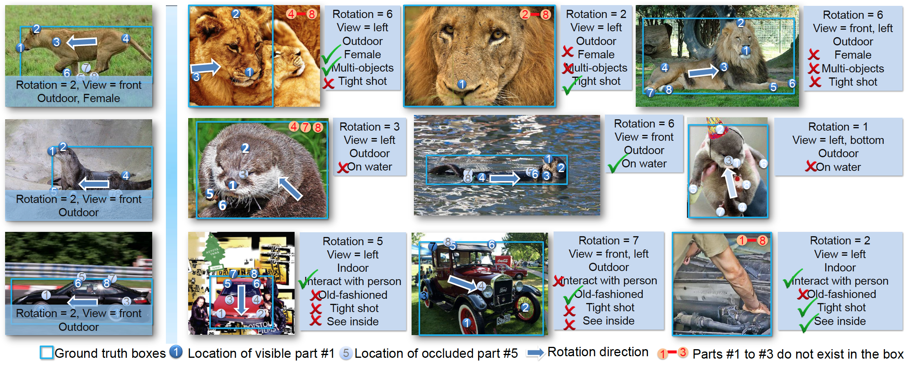
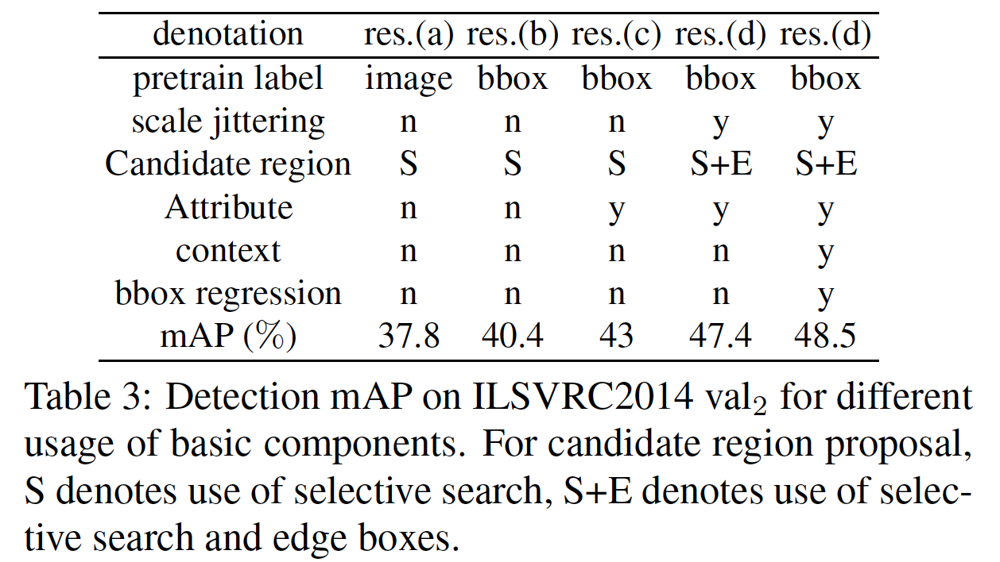
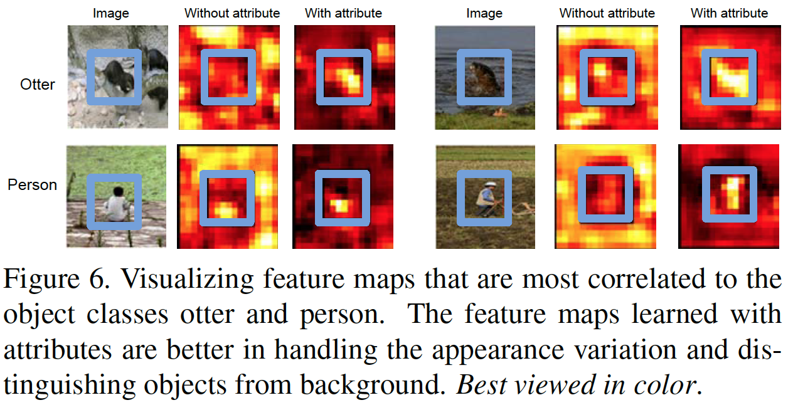

Learning Deep Representation with Large-scale Attributes
Wanli Ouyang, Hongyang Li, Xingyu Zeng, and Xiaogang Wang
Department of Electronic Engineering, The Chinese University of Hong Kong.
Wanli Ouyang, Hongyang Li, Xingyu Zeng, and Xiaogang Wang
Department of Electronic Engineering, The Chinese University of Hong Kong.
April 2017:
January 2016:
September 2015:
Learning strong feature representations from large scale supervision has achieved remarkable success in computer vision as the emergence of deep learning techniques. It is driven by big visual data with rich annotations. This paper contributes a large-scale object attribute database that contains rich attribute annotations (over 300 attributes) for about 180k samples and 499 object classes. Based on the ImageNet object detection dataset, it annotates the rotation, viewpoint, object part location, part occlusion, part existence, common attributes, and class-specific attributes. Then we use this dataset to train deep representations and extensively evaluate how these attributes are useful on the general object detection task. In order to make better use of the attribute annotations, a deep learning scheme is proposed by modeling the relationship of attributes and hierarchically clustering them into semantically meaningful mixture types. Experimental results show that the attributes are helpful in learning better features and improving the object detection accuracy by 2.6% in mAP on the ILSVRC 2014 object detection dataset and 2.4% in mAP on PASCAL VOC 2007 object detection dataset. Such improvement is well generalized across datasets.
The ImageNet attribute dataset is designed and annotated for generic objects. It spans 499 object classes and has 180k samples with rich annotations
including rotation, viewpoint, object part location,
part occlusion, part existence, 10 common attributes, and
314 class specific attributes. Images selected from the ILSVRC object detection dataset are widely used for fine-tuning deep models in object detection. The following figure gives a quick view of the attribute dataset.
Downloads
1. Download the dataset, which includes:
1) an introduction to the dataset (.pptx); 2) training annotation (.mat); 3) validation annotation (.mat).
(the original image is just the ilsvrc14 detection set)
2. Download the supplementary documents (two pdf files) .
They describe in full detail on how we define each attribute in each class. The documents should be used in conjunction with the annotation files.
Note that our dataset is released under the BSD 2-Clause license. Please use the dataset for research purpose only.

We use the ImageNet 2014 training data and val1 data as the training data and the val2 data for evaluating the performance if not specified. The split of val1 and val2 is the same as that in because it was downloaded from the authors’ web. The attribute annotations are not required at the testing stage because they are only used for supervising feature learning. We only evaluate the performance on object detection instead of attribute prediction because the aim of this work is to study how rich attribute annotation can help feature learning in detection.
Some highlight results are shown below. For more details, please check the paper.

For inquiries, please contact Wanli Ouyang via wlouyang@ee.cuhk.edu.hk.
Last updated: Jan. 5th, 2016.